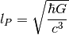

Basic¶
Dimension¶
How to find the relationship between two quantities? For example, what is the dimensional relationship between length and mass.
![\mathrm{ \hbar \sim [Energy]\cdot [Time] \sim [Mass]\cdot [Length]^2 \cdot [Time]^{-1} }](_images/math/6776d75d5392a1980bf89417b26b42d44b9d2eff.png)
![\mathrm{ c\sim [Length]\cdot [Time]^{-1} }](_images/math/dacced09e9010257bbc8fc541c767df46f154a58.png)
![\mathrm{ G \sim [Length]^3\cdot [Mass]^{-1} \cdot [Time]^{-2} }](_images/math/7950776c24761d99cf4e26b0455c7dfb3726a2df.png)
Then it is easy to find that a combination of  cancels the dimension of mass and leaves the inverse of length. That is
cancels the dimension of mass and leaves the inverse of length. That is
![[ L ]^2 =\left[ \frac{\hbar G}{c^3} \right]](_images/math/8856b0f77d81e308071e442e900f96859e057d0d.png)
![[ M ]^2 = \left [ \frac{\hbar c}{ G } \right]](_images/math/038ea5867cd1caf847ee9d753854b2ef5669e565.png)
![[T]^2 = \left[ \frac{ \hbar G }{ c^5 } \right]](_images/math/a9de4a3adbf7a8913adbb11a2f5a48ce9ddcebfc.png)
As we can see, it is possible to use  because we can always restore the units in a deterministic way.
because we can always restore the units in a deterministic way.  are function of mass, length, time, and with
are function of mass, length, time, and with  give us only one solution of mass, length and time: three equations + three variables.
give us only one solution of mass, length and time: three equations + three variables.
Planck Scales¶
As we have seen, the three constant can make up a length scale, a mass scale, a time scale. Then what are they?
Planck length:

Planck mass:

Planck time:

Equations and Dimensions¶
Before solving equations, it is good to reform them in to dimensionless ones.
To make the equation dimensionless doesn’t mean we can just divide arbitary terms on both sides. We need to find out the characteristic quantity of the system. For example, we can divide by on both sides of Schrodinger equation for Harmonic Oscillators. This is a good step because is the characteristic energy scale of system. At the same time, we can make the length terms dimensionless using the characteristic length. DO NOT use an arbitary length!


![\frac{\mathrm d \rho}{\mathrm d t}\equiv \frac{\partial \rho}{\partial t} + \sum_i \left[ \frac{\partial \rho}{\partial q_i}\dot q_i + \frac{\partial \rho}{\partial p_i}\dot p_i \right] = 0](_images/math/849f12b2ce6ca7f4cdc25496d0c374566a4b3c9c.png)